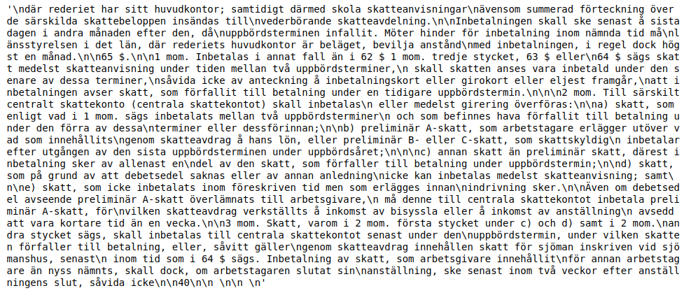
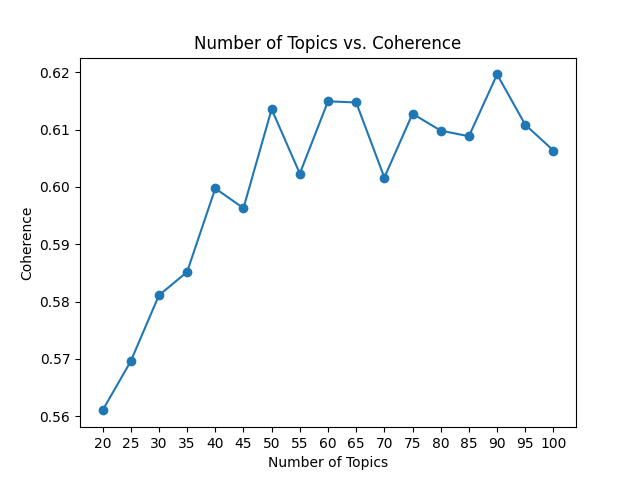
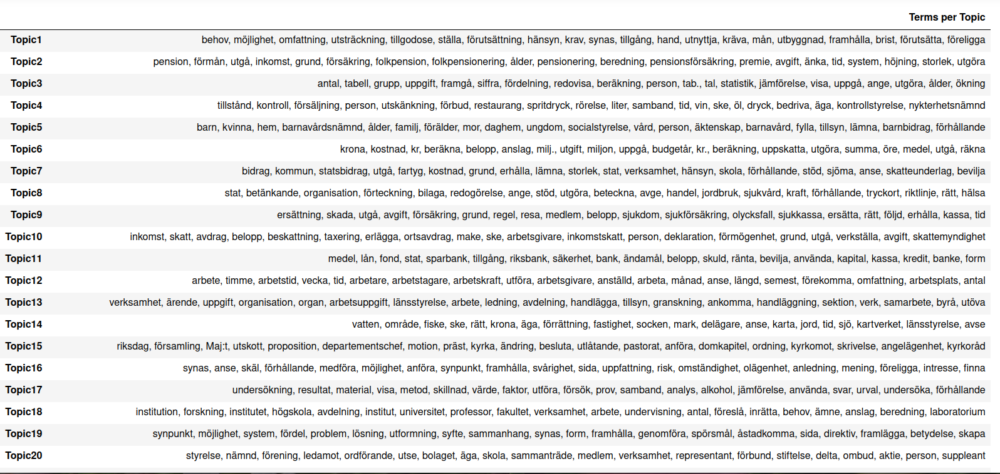
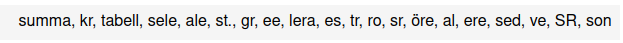

import pandas as pd
df = pd.read_csv("sou_1950-1959_pages.csv")
print(df.groupby('year')['issue'].nunique())Statens Offentliga Utredningar, or the State’s Public Investigations, are a collection of governmental reports commissioned by Swedish departments on a variety of different topics. The National Library owns physical copies of all SOUs published between 1922 and 1999, as well as their digital versions, available here. The SOUs are an interesting collection in their own right because of their historical and political value, but they also constitute a perfect open-source dataset for Swedish NLP. In this post we want to showcase an example of quantitative analysis which allows us to gain insights from a large amount of text, namely topic models. The analysis was done in python and the code can be found here.
Gathering and compiling the data
As we said, the National Library has digitized all the physical SOUs in its possession covering the period 1922-1999. These are available as pdf, as images or as OCR:ed plain text. Plain text format is the most convenient for further processing, so we downloaded and stored them in a .csv file as plain text along with year and issue metadata.
From the year 2000, the Swedish government started publishing its reports directly in digital form, so the digitization process was no longer necessary. The newer issues were downloaded directly from the Government’s Open Data page, where they are available in a variety of different formats. We chose the .json format as it is a structured data format that is easy to manipulate in python, and like for the older SOUs, we extracted plain text as well as year and issue metadata.
In order to build a topic model, a whole SOU issue with over a hundred pages is too long to be considered a single document and the results wouldn’t be very good. So we decided to further process the data and divide each issue into pages. For the older SOUs, the page information is easily available since they come from a physical format and they have been digitized by page. For the newer editions, we used the HTML version of the file, where the page numbers were indicated. Both datasets, by issue and by page, can be downloaded here.
Finally, we thought it would be useful to add department information to each SOU, in order to be able to build topic models by department as well as by decade. This proved to be trickier than expected, for a couple of different reasons. For older SOUs, especially from the ’20s and ’30s, the first page (where the department information is), is often very worn out by time and the quality of the OCR is consequently rather poor. Conversely, for newer SOUs, especially in the beginning of the 21st century, the department information is absent altogether, as they are addressed to the politician that was Head of that department at the time. We used a combination of techniques to compile the department information automatically and then did some manual cross-checking to ensure the best possible results, but the department metadata should still be taken with a grain of salt. The corresponding departments.csv file can also be found here.
Cleaning and pre-processing
Let’s say we want to build a topic model for the ’50s, and see what Swedish politics was most concerned with at that time. We start by loading the dataset and having a look at our data.
| Year | Number of Issues |
|---|---|
| 1950 | 48 |
| 1951 | 59 |
| 1952 | 53 |
| 1953 | 36 |
| 1954 | 40 |
| 1955 | 52 |
| 1956 | 62 |
| 1957 | 51 |
| 1958 | 46 |
| 1959 | 46 |
We can see that we have between 36 and 62 issues for each year from 1950 to 1959. Let’s have a look at the number of pages per year:
print(df.value_counts(subset=['year']))| Year | Number of Pages |
|---|---|
| 1956 | 14266 |
| 1951 | 12737 |
| 1955 | 12121 |
| 1952 | 11045 |
| 1957 | 10780 |
| 1958 | 9034 |
| 1959 | 8886 |
| 1950 | 8834 |
| 1954 | 8195 |
| 1953 | 7596 |
We have thousands of pages for each year, but there is certain degree of variation: 1956 has almost double as many pages as 1953. For a political scientist, this could already be telling them something about the Swedish government in the 50s.
Now let’s see what the actual text looks like, to have an idea of how to proceed with the cleaning. We want to see a typical page, not the table of contents or an appendix full of tables, so we choose one random page in the middle of an issue, for example page 40 in the first SOU of 1952:
print(df[(df['issue']==1) & (df['year']==1952)].iloc[40]['text'])
It looks pretty good, but we need to remove unnecessary whitespace characters and numbers. We don’t want to remove punctuation at this step because we will do sentence segmentation and part-of-speech tagging at a later stage, and the punctuation really helps with that.
# turn all consecutive whitespace characters into one space
df['text'] = df['text'].map(lambda x: re.sub(r'\s+', ' ', x))
# remove numbers
df['text'] = df['text'].map(lambda x: re.sub(r'\d+', '', x))Next we might want to remove the pages that contain less than a given number of words, for example we can set the threshold at 20 words. Those pages most likely do not contain regular text, because if you look at the previous sentence, that is already 27 words not counting punctuation.
df = df[df['text'].str.split().str.len() >= 20]Now we can start the actual pre-processing. We want to base our topic model only on nouns and verbs, as other word classes rarely carry the type of topical semantic information that we are interested in. In order to do that, we need to segment each document into sentences, tokenize the words, remove stopwords and assign POS tags. We also need to lemmatize to reduce the size of the vocabulary and make the model cleaner. Since Swedish is not a major language like English, we have more limited options in the choice of NLP tools. In this example we use the python library Stanza by the Stanford NLP group. While it is really accurate and provides a great lemmatizer for Swedish, it does take several hours on a GPU to process a decade of SOUs. This might be complete overkill or totally reasonable depending on the use case. We decided to go with this tool because we have access to a GPU and it provides sentence segmentation, tokenization, POS-tagging and lemmatization in a few lines of python code. Other possibilities are NLTK (which only has a stemmer for Swedish), efselab or spaCy-UDPipe. Our own spaCy models still don’t have a good lemmatizer because it isn’t trainable, so we couldn’t consider them as an option.
import stanza
pages = list(df.text)
# load stanza model
nlp = stanza.Pipeline(lang='sv', processors='tokenize,pos,lemma')
allowed_tags=['NOUN', 'VERB']
data = []
for page in pages:
doc = nlp(page)
data.append([word.lemma for sent in doc.sentences for word in sent.words if word.pos in allowed_tags
and word.lemma not in stopwords and re.search(r'\w{2}', word.lemma) is not None])Let’s see what is going on in the code snippet above. First we need to convert the text column of our dataframe into a list. Then we load the stanza model (if it’s the first time you use Stanza you will need to download it first) and we define the word classes that we want to include. Next we loop though each page (or document) in our dataset and we run the Stanza model on it. For each sentence we only want to keep the lemmas of the words that are nouns or verbs, provided that they are not stopwords and that they are at least two letters long (this is an arbitrary number, we picked two because Swedish has many meaningful two-letter nouns). With this step we automatically lowercase the words and we get rid of isolated punctuation. Some punctuation marks that have been tokenized in the same token as a word might still appear (for example “kr.”), but it shouldn’t bother us too much in training our model and we can always remove them later if we want to. We use a stopword list that can be downloaded here.
The result of the step above is a list where every document is represented by a list of words. Now we need to create the vocabulary and the corpus that we will use in our topic model. Often in topic modeling a great deal of time is spent tweaking the stopword list with domain-specific stopwords. That gives the researcher a greater degree of control, but we can also use word frequencies and occurrence statistics to help us prune our vocabulary much faster.
id2word = gensim.corpora.Dictionary(data)
id2word.filter_extremes(no_below=10, no_above=0.4)
corpus = [id2word.doc2bow(text) for text in data]The vocabulary is just a look-up table where an index is assigned to every word in our data. We create it with a built-in gensim function. In order to make sure that we keep only relevant words, we would like to get rid of the extremes: words that occur in very few documents are probably OCR errors or context-specific names that would only make our model messier, whereas words that occur in many documents are not likely to be very informative in regard to our topics. We use gensim’s built in filter_extremes() function to get rid of all the words that occur in less than 10 pages or more than 40% of all documents. These numbers are a judgment call and should be adjusted according to the specific problem. In this case, before filtering we have 461253 words in the dictionary and after filtering there are only 47119, which is a much more reasonable number. The corpus is a also a list where each document is represented by a list of tuples. Each tuple contains a word ID and the frequency of that word in the document.
Building a topic model
Now we have all the pieces to build a topic model, but we still have a problem: we have no idea what the number of topics k should be. There are a few different ways to measure the quality of a topic model, for example perplexity and coherence. In this example we use coherence as our metric to compare models with different values of k. The code below trains a separate topic model for each k between 20 and 100 topics with a step of 5, and plots the resulting coherence. We use a gensim wrapper for the java-based tool Mallet which is considered one of the best options for topic models in python. The algorithm that we use is a standard Latent Dirichlet Allocation. It should also be mentioned that with this amount of documents it takes 12-13 minutes to train one topic model, so this process of finding the best value of k is rather time consuming.
mallet_path = "Mallet/bin/mallet"
coherence = []
for k in tqdm(range(20,105,5)):
print('Topics: '+str(k))
ldamallet = gensim.models.wrappers.LdaMallet(mallet_path, corpus=corpus, num_topics=k, id2word=id2word)
coherence_model_ldamallet = CoherenceModel(model=ldamallet, texts=data, dictionary=id2word, coherence='c_v')
coherence_ldamallet = coherence_model_ldamallet.get_coherence()
coherence.append((k,coherence_ldamallet))
x_val = [x[0] for x in coherence]
y_val = [x[1] for x in coherence]
plt.plot(x_val,y_val)
plt.scatter(x_val,y_val)
plt.title('Number of Topics vs. Coherence')
plt.xlabel('Number of Topics')
plt.ylabel('Coherence')
plt.xticks(x_val)
plt.show()
From the image above we can see that coherence improves steadily until about k=50, and after that it stays more or less between 0.60 and 0.62. We could pick k=90 because in absolute terms it has the highest coherence, but the correlation between coherence and perceived quality of the model is not so strict, and for interpretability it is usually easier to have a smaller number of topics. We can settle on k=50 in order to have good coherence and a reasonable number of topics to work with.
Now we can have a look at our topics, and one way to do that is to put the top 20 words for each topic into a dataframe. Here is what it looks like for our data, down to the 20th topic:

Several topics - for example Topics 1, 8, 13 and 19 - seem to be mostly connected to the activities of the government and the investigative process itself. The words that represent them are quite general, so we don’t get many insights from them. On the other hand, we have topics that are clearly dominated by a political issue that was relevant at the time and might still be relevant today. For example, Topic 2 is about the pension system, Topic 4 is about selling alcohol and its consequences, Topic 15 is about the organization of the Church in relation to the state, and Topic 18 is about higher education and research. An interesting phenomenon manifests itself in Topic 35:

It seems to be a mix of words that are likely to appear in a table and OCR errors. We can guess that such pages with a complex layout are not easy for the OCR software and therefore more likely to contain errors. Luckily for us, they have grouped themselves neatly into a single topic and we don’t even need to hunt them down and exclude them manually!
Another common way to visualize topic models is the library pyLDAvis. First we need to convert our Mallet model into a gensim model to make it compatible with the library. Then we can run the visualization with pyLDAvis and we obtain the widget below:
def convert_mallet_to_gensim(mallet_model):
model_gensim = LdaModel(
id2word=mallet_model.id2word, num_topics=mallet_model.num_topics,
alpha=mallet_model.alpha)
model_gensim.state.sstats[...] = mallet_model.wordtopics
model_gensim.sync_state()
return model_gensim
ldagensim = convert_mallet_to_gensim(ldamallet)
vis_data = gensimvis.prepare(ldagensim, corpus, id2word, sort_topics=False)
pyLDAvis.display(vis_data)The widget shows our topics as circles. Their position on the map is an indication of how distinct they are and the size of the circles represents the predominance of each topic in the dataset. We did a pretty good job of having evenly sized topics, and while we do have some overlap on the left side around the horizontal axis, that is to be expected with a high number of topics. We could definitely work on our stopword list to get the topics to diversify themselves even more, by manually eliminating common bureaucratic words that are likely to occur in many documents but didn’t make the cut in our filter. We can also lower the threshold for eliminating a word, say to 5 occurrences in different documents, in order to keep more infrequent words, but we would run a higher risk of including lemmatization and digitization errors.
On the right side of our widget we see a list of words. Those are the most common words in the corpus overall. If we click on a topic we can see the words that define that topic. On the slider at the top we can control the value of λ: a value close to 0 will show the most relevant words for that topic regardless of how frequent they are in the whole corpus, while a value close to 1 will give us words that are important for our topic but also frequent in the rest of the corpus. This allows us to name and interpret the topics, as well as to determine what distinguishes them from one another. The next step would be to go back to the texts and pick up our close-reading from there.
Depending on the research question, you might want to dig deeper and use auxiliary methods like seeded topic models or global vectors to investigate the problem space. Even with regular topic models there are a lot of hyperparameters to tweak in order to improve the results, so go ahead and experiment. We hope you find this example and the corresponding datasets useful, don’t hesitate to share your work with us if you did something cool with them!
Citation
BibTeX citation:
@online{fano2021,
author = {Fano, Elena},
title = {Topic Models for {Statens} {Offentliga} {Utredningar}},
date = {2021-05-04},
url = {https://kb-labb.github.io/posts/2021-05-04-topic-models-for-sous/},
langid = {en}
}
For attribution, please cite this work as:
Fano, Elena. 2021. “Topic Models for Statens Offentliga
Utredningar.” May 4, 2021. https://kb-labb.github.io/posts/2021-05-04-topic-models-for-sous/.